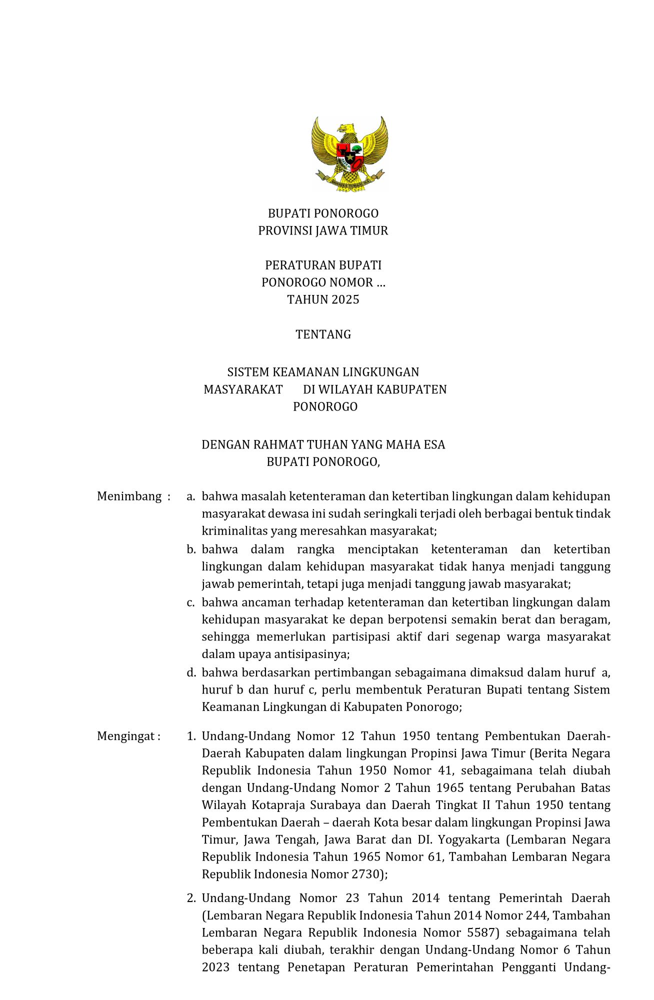
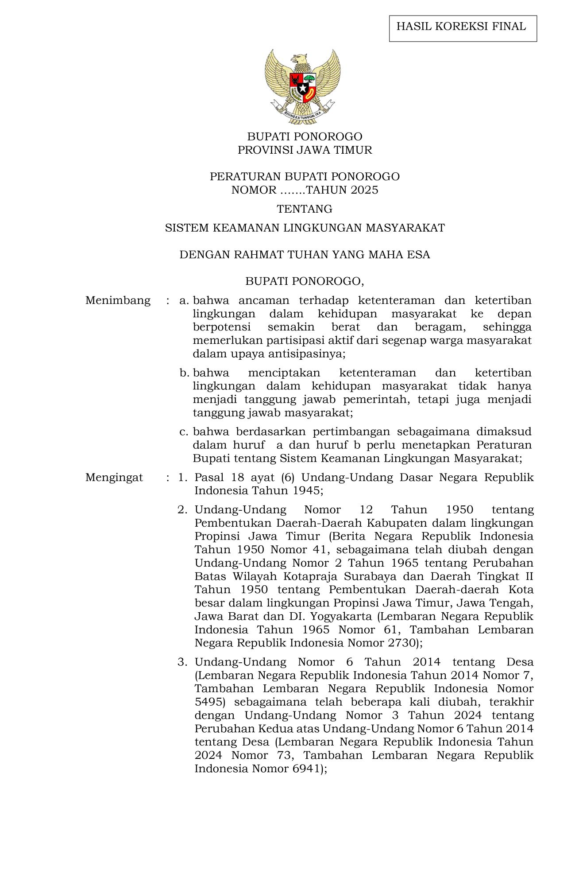
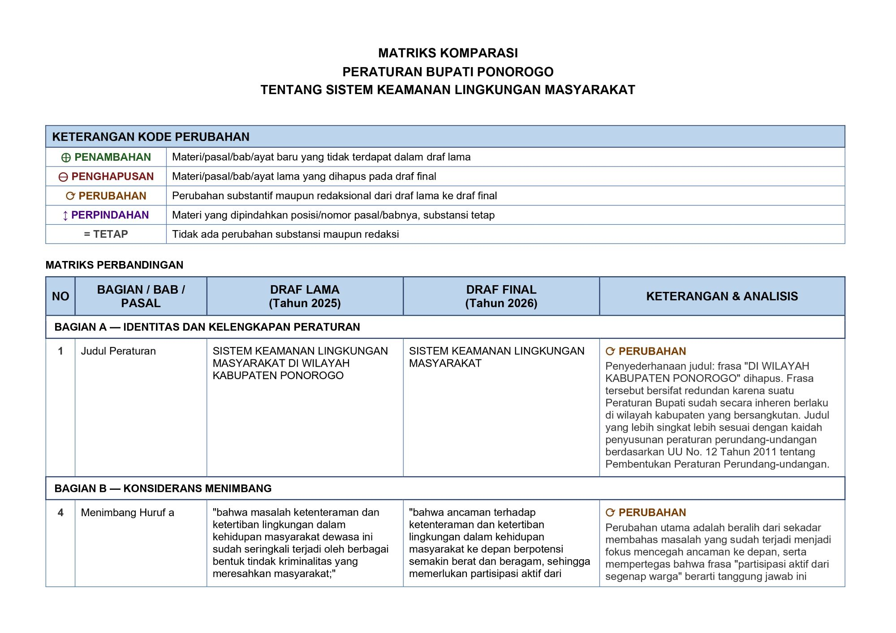

Galeri
Aktualisasi Nilai-Nilai Dasar ASN dalam Penguatan Regulasi Siskamling Berbasis Partisipatif
Sistematika 11 langkah yang dilaksanakan selama masa habituasi untuk memecahkan isu dan mencapai tujuan aktualisasi secara terukur.
Representasi fisik dokumen Draf Lama dan Draf Final yang telah siap untuk dilegalisasi.


Dokumentasi komprehensif poin-poin perubahan dari draf awal ke draf final sebagai bentuk pertanggungjawaban akademis legal drafting.
| Aspek Perubahan | Draf Lama | Draf Final | Makna & Dampak Perubahan |
|---|---|---|---|
| Jumlah BAB | 8 BAB | 11 BAB | +3 BAB baru (VII Pembinaan-Pengawasan, VIII Pendanaan, X Sanksi Administratif). Dari regulasi dasar menjadi regulasi operasional-komprehensif. |
| Jumlah Pasal | 19 Pasal | 22 Pasal | +3 Pasal baru. Peraturan tumbuh organik seiring penambahan mekanisme pelaksanaan dan akuntabilitas. |
| Dasar Konstitusional | Tidak ada | Pasal 18 ayat (6) UUD 1945 | Perbaikan cacat formil potensial. Tanpa dasar UUD, Perbup rentan dalam uji materiil. |
| Dasar UU Desa | Tidak ada | UU 6/2014 jo. UU 3/2024 | Siskamling berbasis desa — UU Desa menjadi landasan kewenangan yang sah dan mutakhir. |
| Dasar Permendagri Satlinmas |
Tidak ada | Permendagri 42/2017 | Menopang kewajiban pelatihan Satlinmas di Pasal 16 — koherensi dasar hukum dengan norma. |
| Kerangka Pembinaan | Tidak ada (hanya Pasal 5 implisit) | 3 bentuk + 5 materi pelatihan wajib | SDM Siskamling terjamin kualitasnya melalui standar pelatihan yang terukur dan dapat diaudit. |
| Pengawasan Terstruktur | Pengendalian koordinatif informal | Monitoring, pemetaan, evaluasi oleh Satpol PP | Siklus PDCA terbentuk: dari reaktif menjadi proaktif dan sistematis. |
| Akuntabilitas Pelaporan | Tidak ada standar periodik | Laporan 6 bulan + insidental KLB | Bupati mendapat informasi berkala — dasarnya kebijakan lanjutan dan alokasi anggaran. |
| Pendanaan Siskamling | Tidak ada BAB khusus | 4 sumber dana + standar per RT + akuntabilitas berjenjang | Siskamling berkelanjutan secara fiskal, tidak lagi hanya mengandalkan swadaya warga. |
| Sanksi Pelanggaran | Tidak ada sama sekali | Teguran lisan dan tertulis oleh Kades/Lurah | Peraturan kini enforceable. Siklus norma lengkap: kewajiban → larangan → sanksi. |
| Definisi Siskamling | Berbasis "sistem mekanis" | Berbasis "partisipasi aktif warga sipil" | Pergeseran paradigma: dari pendekatan tekno-birokratis ke pendekatan komunitas partisipatif. |
| Dasar Hukum Total | 6 angka (tanpa UUD) | 9 angka (dengan UUD, UU Desa, Permendagri) | Hierarki dasar hukum lengkap dari konstitusi hingga Perda. Tidak ada celah normatif. |
